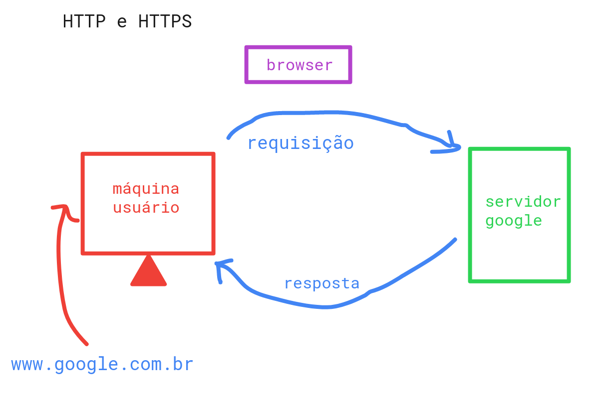

HTTP significaHyperText Transfer Protocol, ou Protocolo de Transferência de
Hipertexto.
Ele é um protocolo utilizado para permitir a comunicação entreo navegador e um servidor na Web.
Quando acessamos um site, o navegador envia uma requisição para um servidor,
O servidor recebe essa requisição, processa a informação e envia uma resposta (response) de
volta.
O funcionamento básico pode ser representado da seguinte forma:

Por exemplo, quando digitamos "www.exemplo.com" no navegador, ele precisa solicitar ao servidor os arquivos necessários para mostrar a página.
| Método | Função |
|---|---|
| GET | Solicita informações ao servidor. |
| POST | Envia informações para o servidor. |
| PUT | Atualiza uma informação no servidor. |
| DELETE | Solicita a exclusão de uma informação. |
Podemos observar requisições HTTP utilizando as ferramentas de desenvolvedor dentro do navegador.
Na aba Network é possível visualizar informações como o método utilizado, endereço da página, código de resposta, tipo de conteúdo e outros campos da comunicação.